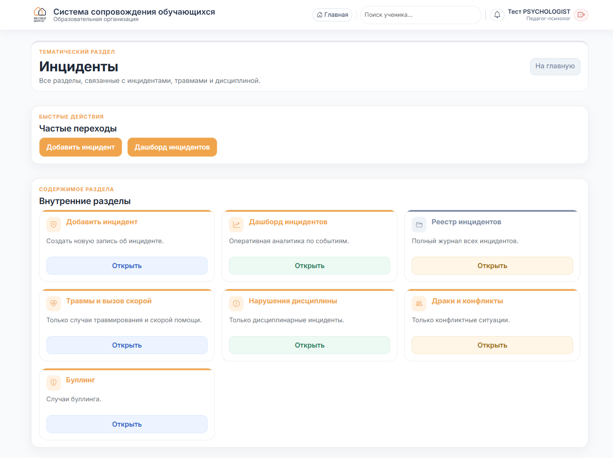
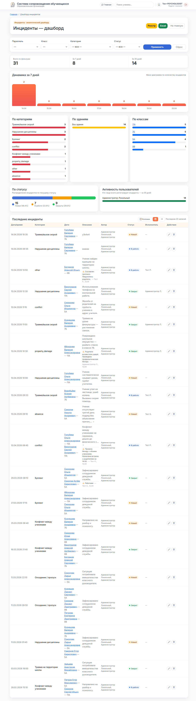
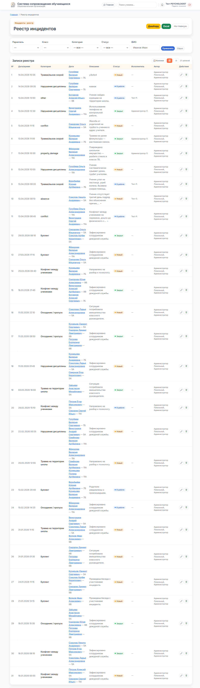

Реестр, дашборд, категории и добавление своих событий.
На главной → тематический раздел «Инциденты». Внутри — 7 карточек: добавить, дашборд, реестр, травмы и вызовы скорой, нарушения дисциплины, драки и конфликты, буллинг.

Открывает аналитику за период: общее число, динамика по дням, разрезы «по категориям / по зданиям / по классам», топ-5 последних событий.

Фильтры сверху — параллель, класс, категория, статус, период. Кликните по столбцу графика или пилле — перейдёте в реестр с готовым фильтром.
Вся таблица инцидентов школы. Фильтры по параллели, классу, категории, статусу, ФИО. Можно экспортировать в Excel.

В каждой строке:
В колонке «Статус» кликните на текущее значение — появится мини-меню выбора: Новый / В работе / Закрыт и др. Статус обновится без перезагрузки страницы.
На главной — плитка «Добавить инцидент». Форма: дата, время, категория, участники (параллель → класс → ученики), описание. Сохранить.